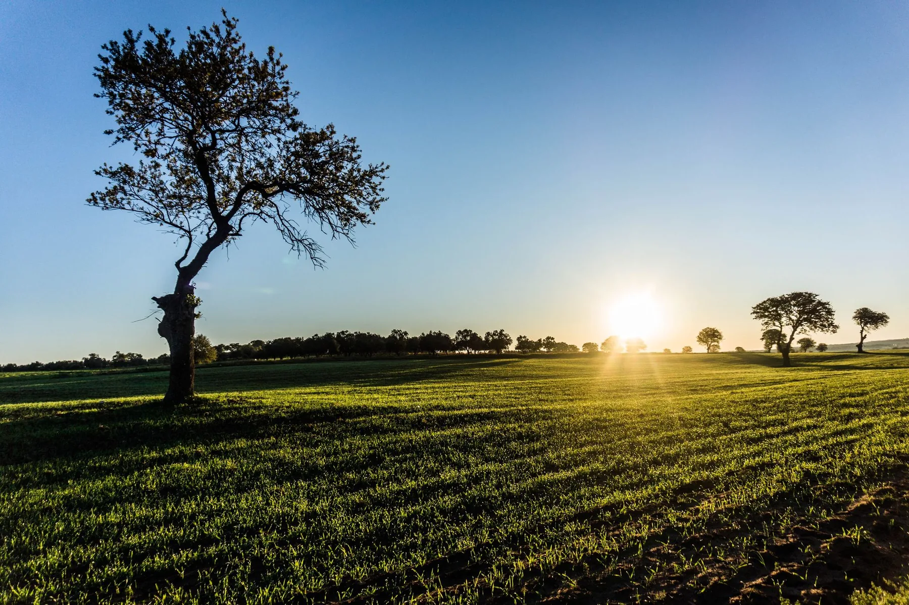
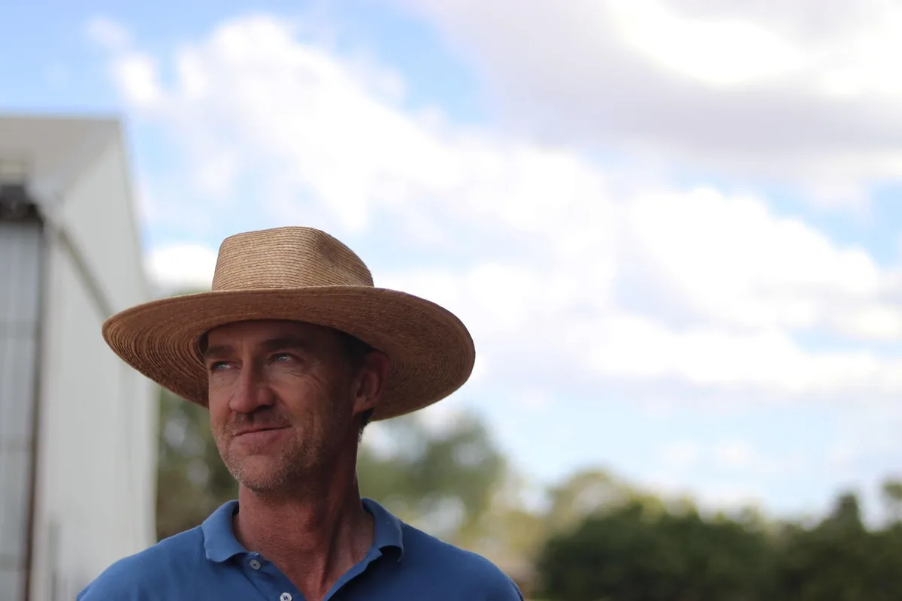

Establishment and uniformity
How the crop or pasture establishes across the paddock and where repeated variation appears.

Soil conditions, rotation history and the season all affect a crop’s nutrition requirements. Hybrid-Ag considers the test results alongside what is happening in the paddock before recommending a prescription blend or other Hybrid-Ag products.
Alongside yield, we consider crop quality, establishment and input costs, as well as the condition of the paddock for the next crop.
How the crop or pasture establishes across the paddock and where repeated variation appears.
Yield and grain, oilseed or pulse quality, assessed against the intended market grade.
The purpose of each application, what the paddock needs and the cost involved.
How pasture establishes, how much usable feed it produces, and how it recovers and persists under the grazing system.
Recommendations account for the crop being grown, its stage and the paddock’s history, including its place in the rotation.
For wheat, barley and oats, we consider establishment, canopy and tillering, head development and grain fill, followed by yield and grade.
Start a cereal testing requestFor canola, we consider establishment, branching, flowering, pod development and harvest, alongside its place in the rotation.
Start a canola testing requestFor lupins and legumes, we consider the rotation, establishment, nodulation and canopy, through to reproductive development and harvest.
Start a pulse testing requestFor lucerne and mixed pastures, we consider establishment and usable growth, along with grazing, recovery and persistence.
Start a pasture testing request
Seasonal imagery and paddock maps can reveal patterns that repeat across years. The useful next step is to inspect those zones, sample them representatively and keep enough location and rotation context to compare them again.
Planning considers the current growth stage, the previous crop and paddock conditions, including when the next application is practical.
Review yield, quality and Nutrient removals alongside paddock variation and management history.
Confirm what will be grown, the zones to be managed, soil condition and moisture, and any issues that need attention well before sowing.
Follow germination, emergence and early root development across the paddock rather than assuming an even start.
Interpret tillering, branching, canopy or pasture growth against stage, moisture and the plant evidence available.
Head, flower and pod development bring crop load, seasonal conditions and the market target into sharper focus.
Review grain or pod fill, harvest results and pasture recovery when planning the next crop or grazing period.
We use these questions to review the test results alongside the rotation, seasonal conditions and the practical needs of the farm.
Identify the paddock or zone, crop stage and current soil and plant results. Note the moisture conditions and the question you need answered.
Compare the rotation and application history with previous tests, seasonal imagery, yield patterns and observations in the paddock.
Agree on priorities, consider the machinery and application opportunities available, and decide what needs checking.
Texture, balance, structure and the rooting environment.
The previous crop and the production aims for the next one.
Leaf, tissue or sap interpreted against crop stage and conditions.
Water quality and how it affects the planned application.
What the paddock produced and what left with the crop.

Bruce Armstrong works across Southern NSW and James White across the North East as part of Hybrid-Ag’s broader agronomy team. They explain the recommendations and work with growers through the season.
Meet the Broadacre teamTell us what you are growing and share any test results.